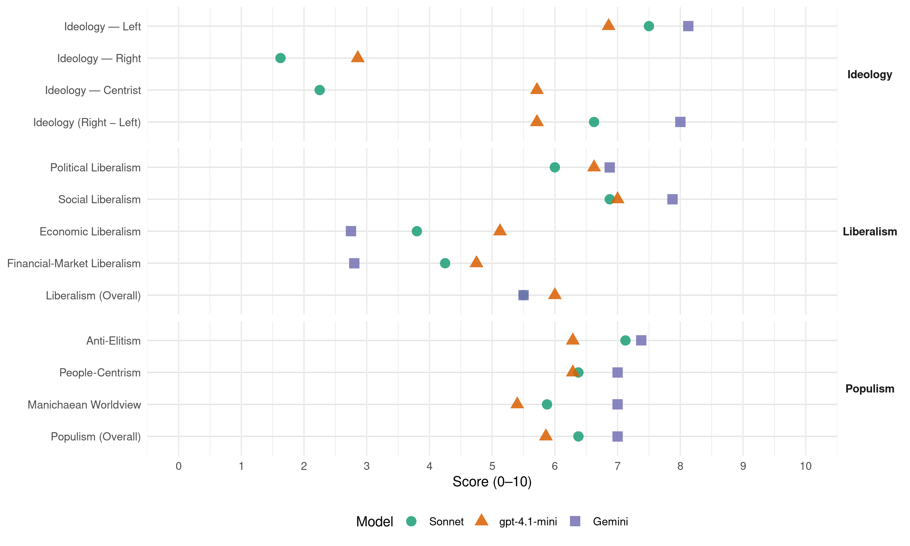

GP (Peru, 2011)
manifesto_id 179021_201104
Get full text: This site shows derived annotations and short verbatim quotes only. The full manifesto text is © Manifesto Project / WZB — obtain it via manifesto-project.wzb.eu using the manifesto_id above.
Headline scores
| Dimension | Sonnet | gpt-4.1-mini | Gemini |
|---|---|---|---|
| Populism (Overall) | 6.4 | 5.9 | 7.0 |
| Anti-Elitism | 7.1 | 6.3 | 7.4 |
| People-Centrism | 6.4 | 6.3 | 7.0 |
| Manichaean Worldview | 5.9 | 5.4 | 7.0 |
| Ideology (Right − Left) | 6.6 | 5.7 | 8.0 |
| Liberalism (Overall) | 5.5 | 6.0 | 5.5 |
| Political Liberalism | 6.0 | 6.6 | 6.9 |
| Social Liberalism | 6.9 | 7.0 | 7.9 |
| Economic Liberalism | 3.8 | 5.1 | 2.8 |
| Financial-Market Liberalism | 4.2 | 4.8 | 2.8 |
Evidence per dimension
Economic Liberalism
Gemini · score 4.0 · mixed · chunk 1
“economía nacional de mercado abierta al mundo”
Forjar un nuevo modelo de desarrollo sobre la base de la construcción de una economía nacional de mercado abierta al mundo, que articule la costa
Gemini · score 3.0 · verified · chunk 2
“abandonar la dictadura del modelo neoliberal”
Segundo: Un régimen económico para la justicia social Debemos abandonar la dictadura del modelo neoliberal plasmado en el capítulo económico
Gemini · score 3.0 · verified · chunk 3
“contraria al modelo neoliberal porque este”
Nuestra estrategia de desarrollo es contraria al modelo neoliberal porque este, tal como se aplica en Perú, desarrolla un circuito económico
Gemini · score 4.0 · mixed · chunk 4
“soberanía en la economía pluralista nacional de mercado”
desde una perspectiva de soberanía en la economía pluralista nacional de mercado, para que cumplan las funciones públicas
Gemini · score 3.0 · verified · chunk 5
“dejar de lado el modelo neoliberal”
profundo cambio para dejar de lado el modelo neoliberal y para llevar adelante una reestructuración total
Gemini · score 4.0 · mixed · chunk 6
“revisar los TLC y autorizar su renegociación”
El Congreso instalado en julio de 2011 deberá revisar los TLC y autorizar su renegociación, en caso necesario.
Gemini · score 2.0 · verified · chunk 7
“Renunciamos a que únicamente el mercado decida”
asimetrías persisten en la sociedad global. Renunciamos a que únicamente el mercado decida en nombre de la
Gemini · score 4.0 · mixed · chunk 8
“únicamente el mercado decida”
Renunciamos a que únicamente el mercado decida en nombre de la sociedad peruana.
gpt-4.1-mini · score 3.0 · verified · chunk 1
“Se fomentará la competencia contra el monopolio y se impedirá el retorno al latifundio. Las inversiones extranjeras que respeten estándares laborales básicos serán bienvenidas”
Se fomentará la competencia contra el monopolio y se impedirá el retorno al latifundio. Las inversiones extranjeras que respeten estándares laborales básicos, que transfieran tecnología, que protejan el medio ambiente y que tributen con justicia serán bienvenidas.
gpt-4.1-mini · score 5.0 · verified · chunk 2
“El Estado regula el desarrollo de la actividad económica”
…La iniciativa privada es libre en el marco de una economía nacional de mercado. El Estado planifica el desarrollo económico y social del país concertando con los actores respectivos. El Estado regula el desarrollo de la actividad económica…
gpt-4.1-mini · score 6.0 · verified · chunk 3
“desarrollo de una economía nacional de mercado, abierta al mundo”
Nuestra estrategia de desarrollo es contraria al modelo neoliberal porque este, tal como se aplica en Perú, desarrolla un circuito económico desnacionalizador. … La construcción de la nación será posible mediante el desarrollo de una economía nacional de mercado, abierta al mundo, que conecte e integre a los pueblos excluidos y olvidados de la costa, sierra y selva.
gpt-4.1-mini · score 6.0 · verified · chunk 4
“la Economía Nacional de Mercado se sustenta en el correcto funcionamiento de los mercados”
…La Economía Nacional de Mercado se sustenta en el correcto funcionamiento de los mercados. La existencia de un mercado presupone fundamentalmente cuatro componentes concurrentes: i) multiplicidad de proveedores en competencia; ii) multiplicidad de consumidores que realizan sus elecciones libremente…
gpt-4.1-mini · score 4.0 · verified · chunk 5
“Se llevará a cabo un profundo cambio para dejar de lado el modelo neoliberal”
…Se llevará a cabo un profundo cambio para dejar de lado el modelo neoliberal y para llevar adelante una reestructuración total de todas las instituciones que debieran vigilar el funcionamiento de los mercados y que hoy sucumben ante la «captura» de los grupos de poder económico… La política neoliberal ha privilegiado a los intereses de los agentes inversionistas…
gpt-4.1-mini · score 6.0 · verified · chunk 6
“reduciremos significativamente los costos de formalización y desburocratizaremos dichos procesos”
…Propuestas de política Reduciremos significativamente los costos de formalización y desburocratizaremos dichos procesos. Se dará continuidad, se fomentará y se corregirán las políticas públicas y normas destinadas a simplificar los trámites burocráticos…
gpt-4.1-mini · score 6.0 · verified · chunk 7
“fortaleceremos el empresariado peruano y crearemos empresas mixtas, dentro del marco de un planeamiento estratégico de desarrollo”
Buscaremos el conocimiento en los países industrializados, no renunciaremos ni al empresariado ni al capital extranjero para impulsar políticas industriales y agroindustriales específicas, fortaleceremos el empresariado peruano y crearemos empresas mixtas, dentro del marco de un planeamiento estratégico de desarrollo.
gpt-4.1-mini · score 5.0 · verified · chunk 8
“la simple apertura de la economía no genera desarrollo sostenido ni aumenta la productividad”
…La simple apertura de la economía no genera desarrollo sostenido ni aumenta la productividad de las empresas. Tampoco el simple comercio exterior conduce a tasas de crecimiento duradero…
Sonnet · score 3.0 · verified · chunk 1
“desregulación de los mercados financieros”
se promovieron y aplicaron políticas de desregulación de los mercados financieros, de privatización, de debilitamiento de las instituciones de protección social
Sonnet · score 4.0 · verified · chunk 2
“La iniciativa privada es libre en el marco de una economía nacional de mercado”
La iniciativa privada es libre en el marco de una economía nacional de mercado. El Estado planifica el desarrollo económico y social del país concertando con los actores respectivos.
Sonnet · score 4.0 · verified · chunk 3
“Políticas de competencia y de regulación de los mercados”
Políticas de competencia y de regulación de los mercados. La economía nacional de mercado se sustenta en la existencia de mercados competitivos y en la ausencia de abusos de poder.
Sonnet · score 4.0 · mixed · chunk 4
“dejar de lado el modelo neoliberal”
Se llevará a cabo un profundo cambio para dejar de lado el modelo neoliberal y para llevar adelante una reestructuración total
Sonnet · score 5.0 · mixed · chunk 5
“combata toda práctica anticompetitiva”
que se combata toda práctica anticompetitiva (concertación, reparto de mercado, limitación de producción, especulación, acaparamiento, etc.)
Sonnet · score 4.0 · verified · chunk 6
“renegociar los tratados de libre comercio”
El Congreso instalado en julio de 2011 deberá revisar los TLC y autorizar su renegociación, en caso necesario.
Sonnet · score 4.0 · verified · chunk 7
“simple apertura de la economía no genera”
La simple apertura de la economía no genera desarrollo sostenido ni aumenta la productividad de las empresas. Tampoco el simple comercio exterior conduce a tasas de crecimiento duradero
Sonnet · score 4.0 · mixed · chunk 8
“no renunciaremos ni al empresariado ni al capital extranjero”
Buscaremos el conocimiento en los países industrializados, no renunciaremos ni al empresariado ni al capital extranjero para impulsar políticas industriales y agroindustriales específicas
Financial-Market Liberalism
Gemini · score 4.0 · mixed · chunk 1
“desarrollo del mercado de capitales”
Se promoverá activamente las inversiones en infraestructura y el desarrollo del mercado de capitales para generar una economía nacional
Gemini · score 2.0 · verified · chunk 2
“rompa con el veto del gran capital”
logra a través de una mayoría progresista que rompa con el veto del gran capital y logre un nuevo contrato social
Gemini · score 4.0 · verified · chunk 3
“controlar el flujo internacional de capitales”
Esto quiere decir que hay que controlar el flujo internacional de capitales y, para asegurar un tipo de cambio real estable
Gemini · score 5.0 · mixed · chunk 4
“desarrollo y profundización del mercado de capitales”
Implementaremos una política de desarrollo y profundización del mercado de capitales en soles. Esta política se llevará a cabo
Gemini · score 3.0 · verified · chunk 5
“Aprobación de una nueva Ley de Bancos”
Aprobación de una nueva Ley de Defensa de la Competencia Aprobación de una nueva Ley de Represión de Competencia Desleal Aprobación de una Ley de Control de Fusiones y Concentraciones Empresariales Aprobación de una nueva Ley de Bancos Aprobación de una reforma
Gemini · score 5.0 · mixed · chunk 6
“participación de las empresas en el mercado de capitales”
Promoveremos la participación de las empresas en el mercado de capitales que ayudan al ordenamiento
Gemini · score 2.0 · verified · chunk 7
“inestabilidad de los mercados financieros globales”
vías de desarrollo ante la inestabilidad de los mercados financieros globales y la falta de
Gemini · score 3.0 · verified · chunk 8
“inestabilidad de los mercados financieros globales”
vías de desarrollo ante la inestabilidad de los mercados financieros globales y la falta de una regulación
gpt-4.1-mini · score 2.0 · verified · chunk 1
“Se promoverá el desarrollo del mercado de capitales para generar una economía nacional de mercado. La inversión privada nacional es fundamental para construir una economía nacional de mercado”
Se promoverá el desarrollo del mercado de capitales para generar una economía nacional de mercado. La inversión privada nacional es fundamental para construir una economía nacional de mercado. Mientras en el modelo neoliberal la inversión extranjera tiene un papel dominante, en el desarrollo de una economía nacional de mercado este papel le corresponde a la inversión privada nacional.
gpt-4.1-mini · score 4.0 · verified · chunk 2
“Banco Central de Reserva es autónomo pero su presidente debe darle cuentas al Congreso”
…Los recursos naturales tanto renovables como no renovables son propiedad de la nación. El Banco Central de Reserva es autónomo pero su presidente debe darle, por lo menos, una vez al año cuentas al Congreso de la labor de la entidad…
gpt-4.1-mini · score 6.0 · verified · chunk 3
“mercado de capitales en soles facilita el financiamiento de mediano y largo plazo”
Por ejemplo, el mercado de capitales en soles facilita el financiamiento de mediano y largo plazo de la inversión, pero también mejora la eficiencia de la política monetaria basada en metas explícitas de inflación con la tasa de interés como instrumento (regla de Taylor). Cuanto más profundo y líquido es este mercado, mayor es la competencia en el mercado financiero, donde hoy domina el oligopolio bancario.
gpt-4.1-mini · score 7.0 · verified · chunk 4
“Implementaremos una política de desarrollo y profundización del mercado de capitales en soles”
…Implementaremos una política de desarrollo y profundización del mercado de capitales en soles. Esta política se llevará a cabo a través del desarrollo del mercado de deuda pública en soles, con un mayor impulso y promoción del Programa de Creadores de Mercados…
gpt-4.1-mini · score 4.0 · verified · chunk 5
“Indecopi, encargado de regular y sancionar estas conductas, ha estado ausente”
…El Indecopi, encargado de regular y sancionar estas conductas, ha estado ausente y su actuación es un rotundo fracaso, incluso ha sido el promotor de que los consumidores asuman el costo de conocer las restricciones de la oferta…
gpt-4.1-mini · score 6.0 · verified · chunk 6
“Promoveremos la participación del Banco de la Nación en el financiamiento de las pequeñas y medianas empresas”
…Fortaleceremos al FOGAPI para que extienda sus garantías a favor de las MYPEs… Promoveremos la participación del Banco de la Nación en el financiamiento de las pequeñas y medianas empresas mediante su red de agencias…
gpt-4.1-mini · score 5.0 · verified · chunk 7
“buscaremos democratizar las relaciones internacionales y, especialmente, los organismos financieros como el FMI, el Banco Mundial, el BID”
Abogaremos por una mayor influencia de las Naciones Unidas en el desarrollo de un sistema de relaciones económicas justas, de políticas económicas globales en el área del comercio internacional y de las relaciones financieras, así como en sus interacciones con las instituciones de Bretton Woods, la OMC y otras estructuras multilaterales. Buscaremos democratizar las relaciones internacionales y, especialmente, los organismos financieros como el FMI, el Banco Mundial, el BID y las organizaciones multilaterales de comercio como la OMC.
gpt-4.1-mini · score 4.0 · verified · chunk 8
“renovar las instituciones de Bretton Woods, fortalecer el G-20”
…renovar las instituciones de Bretton Woods, fortalecer el G-20 y lograr una Organización Mundial del Comercio con reglas más equitativas…
Sonnet · score 4.0 · verified · chunk 1
“mercado interno de capitales en soles”
la restricción de financiamiento se supera al desarrollar el mercado interno de capitales en soles, con un marco regulatorio que facilite el financiamiento
Sonnet · score 4.0 · verified · chunk 2
“El Banco Central de Reserva es autónomo”
El Banco Central de Reserva es autónomo pero su presidente debe darle, por lo menos, una vez al año cuentas al Congreso de la labor de la entidad.
Sonnet · score 5.0 · verified · chunk 3
“mercado de capitales en soles facilita el financiamiento”
el mercado de capitales en soles facilita el financiamiento de mediano y largo plazo de la inversión, pero también mejora la eficiencia de la política monetaria
Sonnet · score 6.0 · verified · chunk 4
“desarrollo del mercado de capitales en soles”
Implementaremos una política de desarrollo y profundización del mercado de capitales en soles
Sonnet · score 4.0 · verified · chunk 5
“Aprobación de una nueva Ley de Bancos”
Aprobación de una nueva Ley de Bancos Aprobación de una reforma del Código Penal en los delitos económicos
Sonnet · score 5.0 · verified · chunk 6
“participación en el mercado de capitales”
Promoveremos la participación de las empresas en el mercado de capitales que ayudan al ordenamiento y apertura de información, a tener acceso a nuevas formas de financiamiento
Sonnet · score 3.0 · verified · chunk 7
“especulación al rentismo financiero”
la vulnerabilidad de los países en vías de desarrollo ante la inestabilidad de los mercados financieros globales y la falta de una regulación y control que ponga fin a la especulación al rentismo financiero
Sonnet · score 3.0 · verified · chunk 8
“especulación al rentismo financiero”
la vulnerabilidad de los países en vías de desarrollo ante la inestabilidad de los mercados financieros globales y la falta de una regulación y control que ponga fin a la especulación al rentismo financiero
Political Liberalism
Gemini · score 8.0 · verified · chunk 1
“La democracia debe garantizar separación de poderes”
La democracia debe garantizar separación de poderes, así como la vigencia plena de los derechos civiles
Gemini · score 7.0 · verified · chunk 2
“establecer mecanismos de participación y control democráticos”
brinde acceso a los ciudadanos, a sus representantes y establezca mecanismos de participación y control democráticos. Hay que separar las figuras
Gemini · score 7.0 · verified · chunk 3
“democracia sólida, representativa y participativa”
Construiremos, por lo tanto, una democracia sólida, representativa y participativa, con presencia del Estado
Gemini · score 5.0 · verified · chunk 4
“democracia es al sistema político”
el mercado de capitales en moneda local es a la economía lo que la democracia es al sistema político.
Gemini · score 5.0 · verified · chunk 5
“redistribución del poder político a los Gobiernos”
Profundizaremos la redistribución del poder político a los Gobiernos Regionales y Locales, promoviendo mecanismos
Gemini · score 7.0 · verified · chunk 6
“descentralización del Estado en curso”
sin tomar en cuenta el proceso de descentralización del Estado en curso ni a los procesos de descentralización
Gemini · score 8.0 · verified · chunk 7
“garante de los derechos de los ciudadanos”
debe recuperarse al Estado como garante de los derechos de los ciudadanos, tanto de los derechos
Gemini · score 8.0 · verified · chunk 8
“defensa de los derechos humanos”
en la Carta Democrática Interamericana, en la defensa de los derechos humanos, en el fortalecimiento de la
gpt-4.1-mini · score 4.0 · verified · chunk 1
“La democracia debe garantizar separación de poderes, así como la vigencia plena de los derechos civiles, sociales, políticos y humanos”
Practicar una forma republicana de gobierno, con mecanismos explícitos de evaluación y control constitucional de los gobernantes. La democracia debe garantizar separación de poderes, así como la vigencia plena de los derechos civiles, sociales, políticos y humanos.
gpt-4.1-mini · score 6.0 · verified · chunk 2
“Estado constitucional, social y democrático, que sea descentralizado, laico, pluricultural y participativo”
…Definir el Estado constitucional, social y democrático, que sea descentralizado, laico, pluricultural y participativo. Un Estado activo y responsable del bienestar de las personas, contrario al Estado mínimo y socialmente irresponsable del texto de 1993…
gpt-4.1-mini · score 7.0 · verified · chunk 3
“fortalezca la participación ciudadana en la toma de decisiones”
Construiremos, por lo tanto, una democracia sólida, representativa y participativa, con presencia del Estado en las zonas pobres y desarticuladas; que fortalezca la participación ciudadana en la toma de decisiones y el ejercicio del poder; que fomente el sistema de partidos políticos; que combata la corrupción, y promueva el respeto irrestricto y el ejercicio pleno de los derechos humanos por todos los peruanos.
gpt-4.1-mini · score 7.0 · verified · chunk 4
“fortaleceremos el Consejo Nacional del Trabajo, con asistencia técnica”
…Fortalecer el Consejo Nacional del Trabajo, con asistencia técnica a sus miembros para el desarrollo de sus funciones. Fortalecimiento del rol fiscalizador del MTPE por medio del aumento y mejora de las inspecciones laborales…
gpt-4.1-mini · score 7.0 · verified · chunk 5
“Interpretaciones del Tribunal Constitucional en este sentido”
…Estas cláusulas no tienen valor jurídico y el Estado nacional tiene que retirarles cualquier valor en beneficio de los derechos de los consumidores. Interpretaciones del Tribunal Constitucional en este sentido y en defensa de los consumidores han sido arbitrariamente dejadas de lado por los organismos de regulación del mercado…
gpt-4.1-mini · score 7.0 · verified · chunk 6
“la Constitución, y en ese sentido la política social que propone está orientada a garantizar el ejercicio de esos derechos”
…afirma un enfoque de derechos en el cual la persona es el fin, tal como lo señala la Constitución, y en ese sentido la política social que propone está orientada a garantizar el ejercicio de esos derechos por todos los ciudadanos y ciudadanas del Perú…
gpt-4.1-mini · score 8.0 · verified · chunk 7
“la defensa de los derechos humanos, la defensa de la democracia, el derecho al desarrollo, el multilateralismo”
Aspiramos, por lo tanto, a que nuestro país tenga una voz cada vez más independiente en el concierto internacional en la defensa de principios fundamentales como los derechos humanos, la defensa de la democracia, el derecho al desarrollo, el multilateralismo, el comercio justo, la defensa del medio ambiente, la solución pacífica de las controversias y el respeto al derecho internacional y a sus instituciones.
gpt-4.1-mini · score 7.0 · verified · chunk 8
“defensa de los derechos humanos”
…Nuestra política de seguridad democrática se basará en la Carta Democrática Interamericana, en la defensa de los derechos humanos, en el fortalecimiento de la Comisión y de la Corte Interamericana de DDHH, en la Corte Penal Internacional y en el respeto a los tratados internacionales de defensa de DDHH…
Sonnet · score 5.0 · verified · chunk 1
“separación de poderes”
La democracia debe garantizar separación de poderes, así como la vigencia plena de los derechos civiles, sociales, políticos y humanos
Sonnet · score 7.0 · verified · chunk 2
“democracia sólida, representativa y participativa”
Construiremos, por lo tanto, una democracia sólida, representativa y participativa, con presencia del Estado en las zonas pobres y desarticuladas; que fortalezca la participación ciudadana.
Sonnet · score 6.0 · verified · chunk 3
“democracia sólida, representativa y participativa”
Construiremos, por lo tanto, una democracia sólida, representativa y participativa, con presencia del Estado en las zonas pobres y desarticuladas; que fortalezca la participación ciudadana
Sonnet · score 5.0 · verified · chunk 4
“garantía de ejercicio de derechos ciudadanos”
se construirá una amplia red de conectividad nacional, pública, de competencia interempresarial y de garantía de ejercicio de derechos ciudadanos como la prensa, expresión y difusión
Sonnet · score 5.0 · verified · chunk 5
“Interpretaciones del Tribunal Constitucional”
Interpretaciones del Tribunal Constitucional en este sentido y en defensa de los consumidores han sido arbitrariamente dejadas de lado por los organismos de regulación
Sonnet · score 6.0 · verified · chunk 6
“transformación democrática integral de la sociedad”
La Revolución Educativa será parte de un programa de transformación democrática integral de la sociedad peruana, llevado a la práctica por un movimiento ciudadano
Sonnet · score 7.0 · verified · chunk 7
“profundización de la democracia y el desarrollo”
Garantizar la paz social en el país, sustentada en la profundización de la democracia y el desarrollo sostenible, promover la erradicación de los factores
Sonnet · score 7.0 · verified · chunk 8
“defensa de los derechos humanos”
Nuestra política de seguridad democrática se basará en la Carta Democrática Interamericana, en la defensa de los derechos humanos, en el fortalecimiento de la Comisión
Liberalism (Overall)
Gemini · score 6.0 · verified · chunk 1
“La democracia debe garantizar separación de poderes”
La democracia debe garantizar separación de poderes, así como la vigencia plena de los derechos civiles
Gemini · score 5.0 · verified · chunk 2
“establecer mecanismos de participación y control democráticos”
brinde acceso a los ciudadanos, a sus representantes y establezca mecanismos de participación y control democráticos. Hay que separar las figuras
Gemini · score 6.0 · verified · chunk 3
“democracia sólida, representativa y participativa”
Construiremos, por lo tanto, una democracia sólida, representativa y participativa, con presencia del Estado
Gemini · score 5.0 · verified · chunk 4
“soberanía en la economía pluralista nacional de mercado”
desde una perspectiva de soberanía en la economía pluralista nacional de mercado, para que cumplan las funciones públicas
Gemini · score 5.0 · verified · chunk 5
“dejar de lado el modelo neoliberal”
profundo cambio para dejar de lado el modelo neoliberal y para llevar adelante una reestructuración total
Gemini · score 6.0 · verified · chunk 6
“participación de las empresas en el mercado de capitales”
Promoveremos la participación de las empresas en el mercado de capitales que ayudan al ordenamiento
Gemini · score 5.0 · verified · chunk 7
“garante de los derechos de los ciudadanos”
debe recuperarse al Estado como garante de los derechos de los ciudadanos, tanto de los derechos
Gemini · score 6.0 · verified · chunk 8
“defensa de los derechos humanos”
en la Carta Democrática Interamericana, en la defensa de los derechos humanos, en el fortalecimiento de la
gpt-4.1-mini · score 3.0 · verified · chunk 1
“La democracia debe garantizar separación de poderes, así como la vigencia plena de los derechos civiles, sociales, políticos y humanos”
Practicar una forma republicana de gobierno, con mecanismos explícitos de evaluación y control constitucional de los gobernantes. La democracia debe garantizar separación de poderes, así como la vigencia plena de los derechos civiles, sociales, políticos y humanos.
gpt-4.1-mini · score 6.0 · verified · chunk 2
“Estado constitucional, social y democrático, que sea descentralizado, laico, pluricultural y participativo”
…Definir el Estado constitucional, social y democrático, que sea descentralizado, laico, pluricultural y participativo. Un Estado activo y responsable del bienestar de las personas, contrario al Estado mínimo y socialmente irresponsable del texto de 1993…
gpt-4.1-mini · score 6.0 · verified · chunk 3
“mercado de capitales en soles facilita el financiamiento de mediano y largo plazo”
Por ejemplo, el mercado de capitales en soles facilita el financiamiento de mediano y largo plazo de la inversión, pero también mejora la eficiencia de la política monetaria basada en metas explícitas de inflación con la tasa de interés como instrumento (regla de Taylor). Cuanto más profundo y líquido es este mercado, mayor es la competencia en el mercado financiero, donde hoy domina el oligopolio bancario.
gpt-4.1-mini · score 7.0 · verified · chunk 4
“Implementaremos una política de desarrollo y profundización del mercado de capitales en soles”
…Implementaremos una política de desarrollo y profundización del mercado de capitales en soles. Esta política se llevará a cabo a través del desarrollo del mercado de deuda pública en soles, con un mayor impulso y promoción del Programa de Creadores de Mercados…
gpt-4.1-mini · score 6.0 · verified · chunk 5
“Interpretaciones del Tribunal Constitucional en este sentido”
…Estas cláusulas no tienen valor jurídico y el Estado nacional tiene que retirarles cualquier valor en beneficio de los derechos de los consumidores. Interpretaciones del Tribunal Constitucional en este sentido y en defensa de los consumidores han sido arbitrariamente dejadas de lado por los organismos de regulación del mercado…
gpt-4.1-mini · score 7.0 · verified · chunk 6
“políticas para la equidad, dirigidas a sectores específicos”
…políticas sociales y políticas para la equidad, dirigidas a sectores específicos. 7.2 POR LOS DERECHOS FUNDAMENTALES 7.2.1 EDUCACIÓN DE CALIDAD PARA TODOS…
gpt-4.1-mini · score 7.0 · verified · chunk 7
“la defensa de los derechos humanos, la defensa de la democracia, el derecho al desarrollo, el multilateralismo”
Aspiramos, por lo tanto, a que nuestro país tenga una voz cada vez más independiente en el concierto internacional en la defensa de principios fundamentales como los derechos humanos, la defensa de la democracia, el derecho al desarrollo, el multilateralismo, el comercio justo, la defensa del medio ambiente, la solución pacífica de las controversias y el respeto al derecho internacional y a sus instituciones.
gpt-4.1-mini · score 6.0 · verified · chunk 8
“defensa de los derechos humanos”
…Nuestra política de seguridad democrática se basará en la Carta Democrática Interamericana, en la defensa de los derechos humanos, en el fortalecimiento de la Comisión y de la Corte Interamericana de DDHH, en la Corte Penal Internacional y en el respeto a los tratados internacionales de defensa de DDHH…
Sonnet · score 5.0 · mixed · chunk 1
“regulador de la economía de mercado”
El Estado será promotor del desarrollo, regulador de la economía de mercado y proveedor de servicios sociales básicos
Sonnet · score 6.0 · verified · chunk 2
“Estado constitucional, social y democrático”
Definir el Estado constitucional, social y democrático, que sea descentralizado, laico, pluricultural y participativo.
Sonnet · score 5.0 · verified · chunk 3
“Banco Central de Reserva autónomo e independiente”
Un Banco Central de Reserva autónomo e independiente, tanto de objetivo como de instrumento, que basa su gestión en fundamentos profesionales y técnicos
Sonnet · score 5.0 · mixed · chunk 4
“mercado de capitales en soles”
Implementaremos una política de desarrollo y profundización del mercado de capitales en soles. Esta política se llevará a cabo a través del desarrollo del mercado de deuda pública en soles
Sonnet · score 5.0 · mixed · chunk 5
“recomponer la autoridad en los mercados”
Se trata de emprender una batalla para recomponer la autoridad en los mercados y asegurar que estos funcionen adecuadamente
Sonnet · score 5.0 · verified · chunk 6
“enfoque de derechos en el cual la persona es el fin”
La propuesta de la Gran Transformación afirma un enfoque de derechos en el cual la persona es el fin, tal como lo señala la Constitución
Sonnet · score 6.0 · verified · chunk 7
“defensa de la democracia, el derecho al desarrollo”
Aspiramos a que nuestro país tenga una voz cada vez más independiente en la defensa de principios fundamentales como los derechos humanos, la defensa de la democracia, el derecho al desarrollo
Sonnet · score 5.0 · mixed · chunk 8
“renovar las instituciones de Bretton Woods”
reducir la excesiva volatilidad de los flujos internacionales de capital de corto plazo, renovar las instituciones de Bretton Woods, fortalecer el G-20 y lograr una Organización Mundial del Comercio
Anti-Elitism
Gemini · score 8.0 · verified · chunk 1
“intereses de las grandes empresas y de un reducido grupo de individuos que hoy maneja el país”
se ha concentrado casi exclusivamente en los circuitos por los que discurren los intereses de las grandes empresas y de un reducido grupo de individuos que hoy maneja el país. Las islas de eficiencia
Gemini · score 8.0 · verified · chunk 2
“secuestro de los aparatos económicos del Estado”
operación previa: el secuestro de los aparatos económicos del Estado en los que operan la cúspide del
Gemini · score 8.0 · verified · chunk 3
“intereses de minorías económicas que no han sido elegidas”
pero los elegidos gobiernan en función a los intereses de minorías económicas que no han sido elegidas por el voto popular.
Gemini · score 7.0 · verified · chunk 4
“sucumben ante la «captura» de los grupos de poder económico”
que debieran vigilar el funcionamiento de los mercados y que hoy sucumben ante la «captura» de los grupos de poder económico. Es decir la SBS, INDECOPI, OSINERGMÍN
Gemini · score 8.0 · verified · chunk 5
“captura de los grupos de poder económico”
vigilar el funcionamiento de los mercados y que hoy sucumben ante la «captura» de los grupos de poder económico. Es decir la SBS
Gemini · score 8.0 · verified · chunk 6
“la estrategia de los globalizadores neoliberales”
Además, la estrategia de los globalizadores neoliberales de reducir los costos del trabajo para aumentar la
Gemini · score 8.0 · verified · chunk 7
“olvidado por los gobernantes en las últimas décadas”
pero este derecho ha sido olvidado por los gobernantes en las últimas décadas, la legislación y políticas
Gemini · score 4.0 · verified · chunk 8
“dogma neoliberal”
desarrollo que se adhieren a su dogma neoliberal. Los países industrializados no representan
gpt-4.1-mini · score 8.0 · verified · chunk 1
“la disputa política en el Perú actual no es entre demócratas y las fuerzas del cambio que hoy son motejadas de antisistemas. Es entre quienes utilizan la democracia para defender los intereses del gran capital nacional y transnacional”
No nos engañemos, la disputa política en el Perú actual no es entre demócratas y las fuerzas del cambio que hoy son motejadas de antisistemas. Es entre quienes utilizan la democracia para defender los intereses del gran capital nacional y transnacional, y los que creemos en una democracia republicana con desarrollo económico, social y político, que beneficie a todos los peruanos.
gpt-4.1-mini · score 7.0 · verified · chunk 2
“golpe antioligárquico y antiaprista de 1962”
…las FF.AA. hicieron lo que el Apra pensó hacer y no hizo. Las FF.AA. pretendían, sin embargo, que las nuevas élites empresariales y políticas se colocaran a la cabeza de esas reformas. Ese es el sentido claro del golpe antioligárquico y antiaprista de 1962 y el de la elección de Belaunde en 1963. Ante el fracaso de Belaunde…
gpt-4.1-mini · score 7.0 · verified · chunk 3
“los grupos de poder económico obtienen rápidas ganancias”
Los grupos de poder económico obtienen rápidas ganancias, a costa de afectar el crecimiento sostenible del país. Encarecen los servicios públicos al elevar las tarifas a los usuarios; frustran el desarrollo regional descentralizado; detienen la generación de empleo digno e impiden la mejora de la calidad de vida de los peruanos.
gpt-4.1-mini · score 3.0 · verified · chunk 4
“la captura de los grupos de poder económico”
…instituciones que debieran vigilar el funcionamiento de los mercados y que hoy sucumben ante la captura de los grupos de poder económico. Es decir la SBS, INDECOPI, OSINERGMÍN, OSITRÁN, SUNASS, OSIPTEL y la nueva SUNASA.
gpt-4.1-mini · score 8.0 · verified · chunk 5
“captura» de los grupos de poder económico”
…instituciones que debieran vigilar el funcionamiento de los mercados y que hoy sucumben ante la «captura» de los grupos de poder económico. Es decir la SBS, INDECOPI, OSINERGMÍN, OSITRÁN, SUNASS, OSIPTEL y la nueva SUNASA. 4.5.2 EL ROL DEL ESTADO EN LA DEFENSA DE LOS CONSUMIDORES El Estado no puede desconocer su rol protector de los consumidores…
gpt-4.1-mini · score 7.0 · verified · chunk 7
“la legislación y políticas neoliberales instauradas por Fujimori y mantenidas por Toledo y García, terminaron por precarizar las condiciones del empleo”
Todos tenemos derecho al trabajo decente, pero este derecho ha sido olvidado por los gobernantes en las últimas décadas, la legislación y políticas neoliberales instauradas por Fujimori y mantenidas por Toledo y García, terminaron por precarizar las condiciones del empleo.
gpt-4.1-mini · score 4.0 · verified · chunk 8
“la falta de una regulación y control que ponga fin a la especulación al rentismo financiero”
…vulnerabilidad de los países en vías de desarrollo ante la inestabilidad de los mercados financieros globales y la falta de una regulación y control que ponga fin a la especulación al rentismo financiero. Si queremos construirnos como sociedades abiertas ante el mundo…
Sonnet · score 9.0 · verified · chunk 1
“élites a los que les importa poco o nada”
consecuencia de la indolencia de nuestro Estado y las élites a los que les importa poco o nada el futuro de sus compatriotas
Sonnet · score 8.0 · verified · chunk 2
“élites económicas y políticas que capturan el Estado”
Este caudillismo es el núcleo del poder en el que confluyen élites económicas y políticas que capturan el Estado para ponerlo a su servicio.
Sonnet · score 8.0 · verified · chunk 3
“grupos de poder económico obtienen rápidas ganancias”
Los grupos de poder económico obtienen rápidas ganancias, a costa de afectar el crecimiento sostenible del país. Encarecen los servicios públicos al elevar las tarifas a los usuarios
Sonnet · score 6.0 · verified · chunk 4
“grupos de poder económico que los tienen capturados”
en clara violación de la ley y favorecimiento a los grupos de poder económico que los tienen capturados
Sonnet · score 7.0 · verified · chunk 5
“grupos de poder económico que los tienen capturados”
en clara violación de la ley y favorecimiento a los grupos de poder económico que los tienen capturados
Sonnet · score 6.0 · verified · chunk 6
“Los globalizadores y neoliberales del país no entienden”
La ola globalizadora sesgó el énfasis de las políticas económicas. Los globalizadores y neoliberales del país no entienden que la productividad y cambio técnico es un fenómeno macroeconómico.
Sonnet · score 7.0 · verified · chunk 7
“legislación y políticas neoliberales instauradas por Fujimori”
los gobernantes en las últimas décadas, la legislación y políticas neoliberales instauradas por Fujimori y mantenidas por Toledo y García, terminaron por precarizar las condiciones del empleo
Sonnet · score 6.0 · verified · chunk 8
“concentran más del 80% de la riqueza mundial”
Los países industrializados no representan sino el 15% de la población mundial, sin embargo, concentran más del 80% de la riqueza mundial. Grandes brechas y asimetrías persisten
Ideology — Centrist
gpt-4.1-mini · score 6.0 · verified · chunk 1
“los movimientos independientes de alcance regional y nacional se imponen sobre los partidos tradicionales. Los idearios y programas de estos partidos ya no están a tono con las exigencias de cambio”
Este sentimiento de cambio ocurre en medio de mutaciones políticas en las que los movimientos independientes de alcance regional y nacional se imponen sobre los partidos tradicionales. Los idearios y programas de estos partidos ya no están a tono con las exigencias de cambio del modo de crecer y generar riqueza impuesto por el neoliberalismo en las últimas dos décadas.
gpt-4.1-mini · score 6.0 · verified · chunk 2
“neopopulismo elemental: reducir la pobreza con dádivas”
…Para los pobres se entregan las migajas del banquete a través de un neopopulismo elemental: reducir la pobreza con dádivas…
gpt-4.1-mini · score 5.0 · verified · chunk 3
“construir un país de todos con iguales derechos y deberes”
Nuestro sueño es construir un país de todos con iguales derechos y deberes, hecho de productores y consumidores modernos con iguales oportunidades. Un país sin el racismo y la desigualdad social que nos separa, un país con estabilidad política, basada en reglas de austeridad en el ejercicio de la función pública.
gpt-4.1-mini · score 5.0 · verified · chunk 4
“la integración del país y en la construcción de la nación”
…hará posible la expansión de mercados internos que ya existen y la creación de otros a lo largo y ancho del país. Con ello se avanzará en la integración del país y en la construcción de la nación, es decir, de una comunidad política nacional.
gpt-4.1-mini · score 6.0 · verified · chunk 5
“El Estado no puede ser «árbitro», observador de las relaciones”
…El Estado no puede ser «árbitro», observador de las relaciones de consumo, cuando las reglas son injustas o abusivas; o lo que es peor, cuando son redactadas adrede para engañar y beneficiar a los proveedores. La presencia del Estado en las relaciones de consumo es de protección a la parte más débil de la relación económica…
gpt-4.1-mini · score 6.0 · verified · chunk 7
“la participación efectiva y el dialogo permanente y la de los actores involucrados, en el marco de la diversidad étnico-culturales y el respeto irrestricto de los derechos humanos”
Atención y resolución oportuna, democrática y concertada de los conflictos sociales, con la participación efectiva y el dialogo permanente y la de los actores involucrados, en el marco de la diversidad étnico-culturales y el respeto irrestricto de los derechos humanos.
gpt-4.1-mini · score 6.0 · verified · chunk 8
“buscaremos democratizar las relaciones internacionales”
…Buscaremos democratizar las relaciones internacionales y, especialmente, los organismos financieros como el FMI, el Banco Mundial, el BID y las organizaciones multilaterales de comercio como la OMC…
Sonnet · score 2.0 · verified · chunk 1
“fuerzas patrióticas, nacionalistas, de izquierda”
La ciudadanía, los movimientos sociales, las fuerzas patrióticas, nacionalistas, de izquierda y progresistas, reclamamos una gran transformación
Sonnet · score 3.0 · verified · chunk 2
“construir una nación para todos”
transformar el Estado y construir una nación para todos, que ha sido la tarea negada de las últimas dos transiciones a la democracia.
Sonnet · score 2.0 · verified · chunk 3
“economía nacional de mercado, abierta al mundo”
la construcción de la nación será posible mediante el desarrollo de una economía nacional de mercado, abierta al mundo, que conecte e integre a los pueblos excluidos
Sonnet · score 2.0 · verified · chunk 4
“economía nacional de mercado”
Esta es la base de la construcción de una economía nacional de mercado que permitirá integrar al país
Sonnet · score 2.0 · verified · chunk 5
“Economía Nacional de Mercado”
El objetivo principal de la regulación en una Economía Nacional de Mercado está centrado en recomponer el equilibrio
Sonnet · score 2.0 · verified · chunk 6
“agenda de un crecimiento integrador del país”
La agenda de un crecimiento integrador del país, con un nuevo modo de crecer, generando mercados internos, aumentando el empleo
Sonnet · score 2.0 · verified · chunk 7
“diálogo permanente y la de los actores”
Atención y resolución oportuna, democrática y concertada de los conflictos sociales, con la participación efectiva y el dialogo permanente y la de los actores involucrados
Sonnet · score 3.0 · verified · chunk 8
“mundo multipolar”
No somos partidarios de la configuración de un mundo unipolar en el sistema internacional. Apoyaremos los esfuerzos de países como la Federación Rusa
Ideology — Left
Gemini · score 9.0 · verified · chunk 1
“un programa político de cambio radical de un modelo neoliberal que acentúa la desigualdad social”
Es, por lo tanto, un programa político de cambio radical de un modelo neoliberal que acentúa la desigualdad social, depreda los recursos naturales
Gemini · score 9.0 · verified · chunk 2
“rompa con el veto del gran capital”
logra a través de una mayoría progresista que rompa con el veto del gran capital y logre un nuevo contrato social favorable al
Gemini · score 9.0 · verified · chunk 3
“terminar con el modelo neoliberal desnacionalizador y excluyente”
Por eso debemos terminar con el modelo neoliberal desnacionalizador y excluyente. Es el modelo que ha
Gemini · score 8.0 · verified · chunk 4
“dejar de lado el modelo neoliberal”
Se llevará a cabo un profundo cambio para dejar de lado el modelo neoliberal y para llevar adelante una reestructuración total
Gemini · score 8.0 · verified · chunk 5
“dejar de lado el modelo neoliberal”
profundo cambio para dejar de lado el modelo neoliberal y para llevar adelante una reestructuración total
Gemini · score 8.0 · verified · chunk 6
“crecimiento económico con redistribución”
la mejor base para la política social es un crecimiento económico con redistribución (con énfasis en lo salarial)
Gemini · score 8.0 · verified · chunk 7
“favorece a los empleadores y en particular al gran capital”
poder entre trabajadores y empleadores, por el contrario claramente favorece a los empleadores y en particular al gran capital nacional y extranjero.
Gemini · score 6.0 · verified · chunk 8
“especulación al rentismo financiero”
falta de una regulación y control que ponga fin a la especulación al rentismo financiero.
gpt-4.1-mini · score 8.0 · verified · chunk 1
“el nacionalismo es una alternativa democrática a la actual modernización neoliberal excluyente y desnacionalizadora. Es, por lo tanto, un programa político de cambio radical de un modelo neoliberal que acentúa la desigualdad social”
Para nosotros, el nacionalismo es una alternativa democrática a la actual modernización neoliberal excluyente y desnacionalizadora. Es, por lo tanto, un programa político de cambio radical de un modelo neoliberal que acentúa la desigualdad social, depreda los recursos naturales, violenta la legalidad y la democracia, y no genera desarrollo.
gpt-4.1-mini · score 7.0 · verified · chunk 2
“proyectos políticos imperantes asumieron un carácter populista de inclusión y de democratización”
…Los proyectos políticos imperantes asumieron un carácter populista de inclusión y de democratización. La atención a las demandas populares de mejores servicios estatales en forma de salud pública, educación pública y un marco de seguridad para la vida ciudadana estaba presente en los programas de muchos de los partidos del 30 y de los 50…
gpt-4.1-mini · score 7.0 · verified · chunk 3
“restitución del impuesto a la herencia a partir de cierto nivel”
La reforma tributaria debe contribuir, además, con la generación de un circuito de demanda e ingresos centrado dentro del territorio nacional. … La restitución del impuesto a la herencia a partir de cierto nivel cuya fijación debe hacerse con criterios de equidad.
gpt-4.1-mini · score 6.0 · verified · chunk 4
“recomponer la autoridad en los mercados y asegurar que estos funcionen adecuadamente”
…se trata de emprender una batalla para recomponer la autoridad en los mercados y asegurar que estos funcionen adecuadamente; que se combata toda práctica anticompetitiva (concertación, reparto de mercado, limitación de producción, especulación, acaparamiento, etc.) y el abuso de posición de dominio…
gpt-4.1-mini · score 8.0 · verified · chunk 5
“modelo neoliberal y para llevar adelante una reestructuración total”
…Se llevará a cabo un profundo cambio para dejar de lado el modelo neoliberal y para llevar adelante una reestructuración total de todas las instituciones que debieran vigilar el funcionamiento de los mercados y que hoy sucumben ante la «captura» de los grupos de poder económico…
gpt-4.1-mini · score 7.0 · verified · chunk 7
“la introducción del Sistema Privado de Pensiones (SPP) en la década de los noventa atentó directamente contra el carácter solidario y redistributivo”
En el Perú, la introducción del Sistema Privado de Pensiones (SPP) en la década de los noventa atentó directamente contra el carácter solidario y redistributivo sobre los cuales se sustenta cualquier esquema de seguridad social.
gpt-4.1-mini · score 5.0 · verified · chunk 8
“luchar por relaciones justas y equitativas”
…Si queremos construirnos como sociedades abiertas ante el mundo debemos luchar por relaciones justas y equitativas. La simple apertura de la economía no genera desarrollo sostenido ni aumenta la productividad de las empresas…
Sonnet · score 9.0 · verified · chunk 1
“redistribución de los beneficios del crecimiento”
una efectiva oportunidad de redistribución de los beneficios del crecimiento y del desarrollo, se ha optado por programas sociales de emergencia
Sonnet · score 8.0 · verified · chunk 2
“terminar con el modelo neoliberal desnacionalizador y excluyente”
Por eso debemos terminar con el modelo neoliberal desnacionalizador y excluyente. Es el modelo que ha reprimarizado nuestra economía, que la ha hecho más dependiente de los capitales y del mercado internacional.
Sonnet · score 8.0 · verified · chunk 3
“impuesto a las sobreutilidades para restablecer el principio”
Aplicaremos un impuesto a las sobreutilidades para restablecer el principio de justicia distributiva. El sesgo pro cíclico de la política fiscal será neutralizado
Sonnet · score 7.0 · verified · chunk 4
“Petroperú tendrá un rol rector”
Recién cuando esté cubierta la demanda nacional, los nuevos hallazgos de gas natural podrían justificar la exportación de los excedentes. Petroperú tendrá un rol rector en estos objetivos
Sonnet · score 7.0 · verified · chunk 5
“consumidores han sido explotados y obligados a financiar”
los consumidores han sido explotados y obligados a financiar con sus pagos excesivos la recuperación prácticamente inmediata de las inversiones realizadas por los privados
Sonnet · score 7.0 · verified · chunk 6
“crecimiento económico con redistribución”
una estrategia nacional de desarrollo requiere acumulación interna en capitales humanos, físicos y financieros… la mejor base para la política social es un crecimiento económico con redistribución
Sonnet · score 8.0 · verified · chunk 7
“carácter solidario y redistributivo”
la introducción del Sistema Privado de Pensiones (SPP) en la década de los noventa atentó directamente contra el carácter solidario y redistributivo sobre los cuales se sustenta cualquier esquema de seguridad social
Sonnet · score 6.0 · verified · chunk 8
“dogma neoliberal”
países en vías de desarrollo que se adhieren a su dogma neoliberal. Los países industrializados no representan sino el 15% de la población mundial
Ideology (Right − Left)
Gemini · score 9.0 · verified · chunk 1
“un programa político de cambio radical de un modelo neoliberal que acentúa la desigualdad social”
Es, por lo tanto, un programa político de cambio radical de un modelo neoliberal que acentúa la desigualdad social, depreda los recursos naturales
Gemini · score 9.0 · verified · chunk 2
“rompa con el veto del gran capital”
logra a través de una mayoría progresista que rompa con el veto del gran capital y logre un nuevo contrato social favorable al
Gemini · score 9.0 · verified · chunk 3
“terminar con el modelo neoliberal desnacionalizador y excluyente”
Por eso debemos terminar con el modelo neoliberal desnacionalizador y excluyente. Es el modelo que ha
Gemini · score 8.0 · verified · chunk 4
“dejar de lado el modelo neoliberal”
Se llevará a cabo un profundo cambio para dejar de lado el modelo neoliberal y para llevar adelante una reestructuración total
Gemini · score 8.0 · verified · chunk 5
“dejar de lado el modelo neoliberal”
profundo cambio para dejar de lado el modelo neoliberal y para llevar adelante una reestructuración total
Gemini · score 8.0 · verified · chunk 6
“crecimiento económico con redistribución”
la mejor base para la política social es un crecimiento económico con redistribución (con énfasis en lo salarial)
Gemini · score 8.0 · verified · chunk 7
“favorece a los empleadores y en particular al gran capital”
poder entre trabajadores y empleadores, por el contrario claramente favorece a los empleadores y en particular al gran capital nacional y extranjero.
Gemini · score 5.0 · verified · chunk 8
“especulación al rentismo financiero”
falta de una regulación y control que ponga fin a la especulación al rentismo financiero.
gpt-4.1-mini · score 7.0 · verified · chunk 1
“Para nosotros, el nacionalismo es una alternativa democrática a la actual modernización neoliberal excluyente y desnacionalizadora. Es, por lo tanto, un programa político de cambio radical de un modelo neoliberal”
Para nosotros, el nacionalismo es una alternativa democrática a la actual modernización neoliberal excluyente y desnacionalizadora. Es, por lo tanto, un programa político de cambio radical de un modelo neoliberal que acentúa la desigualdad social, depreda los recursos naturales, violenta la legalidad y la democracia, y no genera desarrollo.
gpt-4.1-mini · score 6.0 · verified · chunk 2
“proyectos políticos imperantes asumieron un carácter populista de inclusión y de democratización”
…Los proyectos políticos imperantes asumieron un carácter populista de inclusión y de democratización. La atención a las demandas populares de mejores servicios estatales en forma de salud pública, educación pública y un marco de seguridad para la vida ciudadana estaba presente en los programas de muchos de los partidos del 30 y de los 50…
gpt-4.1-mini · score 5.0 · verified · chunk 3
“los grupos de poder económico obtienen rápidas ganancias”
Los grupos de poder económico obtienen rápidas ganancias, a costa de afectar el crecimiento sostenible del país. Encarecen los servicios públicos al elevar las tarifas a los usuarios; frustran el desarrollo regional descentralizado; detienen la generación de empleo digno e impiden la mejora de la calidad de vida de los peruanos.
gpt-4.1-mini · score 5.0 · verified · chunk 4
“la integración del país y en la construcción de la nación”
…hará posible la expansión de mercados internos que ya existen y la creación de otros a lo largo y ancho del país. Con ello se avanzará en la integración del país y en la construcción de la nación, es decir, de una comunidad política nacional.
gpt-4.1-mini · score 6.0 · verified · chunk 5
“modelo neoliberal y para llevar adelante una reestructuración total”
…Se llevará a cabo un profundo cambio para dejar de lado el modelo neoliberal y para llevar adelante una reestructuración total de todas las instituciones que debieran vigilar el funcionamiento de los mercados y que hoy sucumben ante la «captura» de los grupos de poder económico…
gpt-4.1-mini · score 6.0 · verified · chunk 7
“la introducción del Sistema Privado de Pensiones (SPP) en la década de los noventa atentó directamente contra el carácter solidario y redistributivo”
En el Perú, la introducción del Sistema Privado de Pensiones (SPP) en la década de los noventa atentó directamente contra el carácter solidario y redistributivo sobre los cuales se sustenta cualquier esquema de seguridad social.
gpt-4.1-mini · score 5.0 · verified · chunk 8
“luchar por relaciones justas y equitativas”
…Si queremos construirnos como sociedades abiertas ante el mundo debemos luchar por relaciones justas y equitativas. La simple apertura de la economía no genera desarrollo sostenido ni aumenta la productividad de las empresas…
Sonnet · score 9.0 · verified · chunk 1
“programa político de cambio radical”
es un programa político de cambio radical de un modelo neoliberal que acentúa la desigualdad social, depreda los recursos naturales
Sonnet · score 7.0 · verified · chunk 2
“régimen económico para la justicia social”
Segundo: Un régimen económico para la justicia social. Debemos abandonar la dictadura del modelo neoliberal plasmado en el capítulo económico del texto de 1993.
Sonnet · score 7.0 · verified · chunk 3
“Nosotros, los nacionalistas, proponemos aumentar la productividad”
Nosotros, los nacionalistas, proponemos aumentar la productividad y la competencia de nuestra economía con el desarrollo de los mercados internos
Sonnet · score 6.0 · verified · chunk 4
“Petroperú tendrá un rol rector”
Recién cuando esté cubierta la demanda nacional, los nuevos hallazgos de gas natural podrían justificar la exportación de los excedentes. Petroperú tendrá un rol rector en estos objetivos
Sonnet · score 6.0 · verified · chunk 5
“retirando a los defensores de la ideología neoliberal”
replantear sus objetivos, retirando a los defensores de la ideología neoliberal. Un controlador del funcionamiento del mercado
Sonnet · score 6.0 · verified · chunk 6
“anti-corporativo, redistribución, exclusión social”
acentúa el conflicto distributivo y exacerba la exclusión y marginalidad social y económica. Esa estrategia no es el camino para construir relaciones internacionales armoniosas.
Sonnet · score 7.0 · verified · chunk 7
“anti-corporativa, redistribución, igualdad social”
Recuperar el carácter solidario y redistributivo inherente a un esquema de sistema de pensiones. Universalización del Sistema de Pensiones
Sonnet · score 5.0 · verified · chunk 8
“distribución justa y equitativa de los beneficios”
Impulsaremos en las Naciones Unidas un régimen internacional para promover y salvaguardar la distribución justa y equitativa de los beneficios derivados de la utilización de los recursos genéticos
Ideology — Right
gpt-4.1-mini · score 3.0 · verified · chunk 1
“la propuesta neoliberal, en la práctica, impidió la creación de un bloque regional al no considerar que los espacios regionales, en especial el andino, sean para nosotros mercados internos ampliados”
La propuesta neoliberal, en la práctica, impidió la creación de un bloque regional al no considerar que los espacios regionales, en especial el andino, sean para nosotros mercados internos ampliados y verdaderas plataformas de lanzamiento para que nuestros productos manufacturados compitan en mejores condiciones en el mercado mundial.
gpt-4.1-mini · score 3.0 · verified · chunk 2
“Estado predatorio, neoliberal y cleptopatrimonialista”
…El Perú alberga hoy el caso típico (en Latinoamérica) de un Estado predatorio. Su Estado es neoliberal y cleptopatrimonialista, dados los altos niveles de corrupción que permite…
gpt-4.1-mini · score 3.0 · verified · chunk 3
“superar las profundas asimetrías con Chile para lograr una relación equitativa”
Promoveremos la integración andina y sudamericana, al recuperar el posicionamiento estratégico para la salida al Pacífico de Sudamérica integrada, … superar las profundas asimetrías con Chile para lograr una relación equitativa.
gpt-4.1-mini · score 3.0 · verified · chunk 4
“los pueblos más alejados de nuestro país tendrán las mismas oportunidades de desarrollo”
…permitirá la creación de polos de desarrollo fronterizo y contribuirá con la integración latinoamericana. Los pueblos más alejados de nuestro país tendrán las mismas oportunidades de desarrollo que cualquier ciudad capitalina con los servicios públicos indispensables…
gpt-4.1-mini · score 3.0 · verified · chunk 5
“defender el mercado nacional frente a las importaciones subsidiadas”
…orientada a dotar de seguridad alimentaria a la población peruana; insumos para la agroindustria nacional que ubique a los pequeños productores organizados de las regiones naturales, en los mejores mercados nacionales e internacionales, en condiciones ventajosas, para revalorar al hombre del campo y a la actividad agraria… defender el mercado nacional frente a las importaciones subsidiadas…
gpt-4.1-mini · score 3.0 · verified · chunk 7
“la defensa de nuestra soberanía, integridad territorial y de nuestros recursos naturales”
La nueva política exterior del Perú se basará en la promoción de nuestro desarrollo nacional, la paz y la defensa de la democracia, en el respeto a los tratados internacionales, a la integración andina y regional, en el respeto mutuo, la no injerencia en asuntos internos el pluralismo político, ideológico y económico; y en la defensa de nuestra soberanía, integridad territorial y de nuestros recursos naturales.
gpt-4.1-mini · score 2.0 · verified · chunk 8
“la defensa del medio ambiente y de nuestra biodiversidad”
…Nuestras relaciones con EEUU se basaran en el respeto a nuestra independencia, en la reducción de las actuales asimetrías económicas, en la promoción de un comercio justo, en la defensa del medio ambiente y de nuestra biodiversidad, en una política de seguridad que parta de nuestros propios intereses nacionales…
Sonnet · score 2.0 · verified · chunk 1
“soberanía nacional”
defensor de la soberanía nacional. Esta es la herramienta para construir una nación para todos
Sonnet · score 2.0 · verified · chunk 2
“La subordinación de los intereses individuales y grupales a los intereses de la patria”
Un Estado pluricultural y descentralista implica: La subordinación de los intereses individuales y grupales a los intereses de la patria.
Sonnet · score 2.0 · verified · chunk 3
“recuperar el posicionamiento estratégico para la salida”
Promoveremos la integración andina y sudamericana, al recuperar el posicionamiento estratégico para la salida al Pacífico de Sudamérica integrada
Sonnet · score 2.0 · verified · chunk 4
“soberanía marítimo-portuaria”
afirmar en la interfaz de los mismos su soberanía marítimo-portuaria
Sonnet · score 2.0 · verified · chunk 5
“defenderá el mercado nacional frente a las importaciones”
se implementará una transformación radical del sector agropecuario y se defenderá el mercado nacional frente a las importaciones subsidiadas
Sonnet · score 1.0 · verified · chunk 6
“sentido nacionalista y el amor al Perú”
para que las últimas promociones realicen viajes de promoción al interior del país, con la finalidad de acentuar el sentido nacionalista y el amor al Perú
Sonnet · score 1.0 · verified · chunk 7
“respeto a nuestra independencia”
Nuestras relaciones con EEUU se basaran en el respeto a nuestra independencia, en la reducción de las actuales asimetrías económicas
Sonnet · score 1.0 · verified · chunk 8
“soberanía de los países”
garantice la seguridad de las naciones, la soberanía de los países, promueva el desarrollo, defienda el medio ambiente y elimine la pobreza
Manichaean Worldview
Gemini · score 8.0 · verified · chunk 1
“los que defienden el pasado vergonzante y los que pugnan por el nacimiento de una patria nueva”
Es la disputa entre los que defienden el pasado vergonzante y los que pugnan por el nacimiento de una patria nueva, de una comunidad política
Gemini · score 7.0 · verified · chunk 2
“todas estas voracidades juntas han bloqueado”
élites políticas y la alta burocracia anhelaban parte del botín. Todas estas voracidades juntas han bloqueado y bloquean la posibilidad de orientar
Gemini · score 7.0 · verified · chunk 3
“grotesco «chorreo» que nunca llega de las mesas de los ricos”
excluir y marginar económica y socialmente a poblaciones enteras de la costa, sierra y selva de los beneficios de un grotesco «chorreo» que nunca llega de las mesas de los ricos.
Gemini · score 6.0 · verified · chunk 4
“los consumidores han sido explotados”
En todos estos años, los consumidores han sido explotados y obligados a financiar con sus pagos excesivos
Gemini · score 8.0 · verified · chunk 5
“traicionen las competencias asignadas y actúen de espaldas”
de que estas entidades traicionen las competencias asignadas y actúen de espaldas a los consumidores. Se trata de emprender
Gemini · score 7.0 · verified · chunk 6
“el abandono de la educación por parte”
La causa de esta situación es el abandono de la educación por parte de quienes han gobernado históricamente al país.
Gemini · score 6.0 · verified · chunk 7
“poderosos lobbies que buscan perpetuar”
aprobarse a pesar de los poderosos lobbies que buscan perpetuar el marco legal y
gpt-4.1-mini · score 7.0 · verified · chunk 1
“la disputa política en el Perú actual no es entre demócratas y las fuerzas del cambio que hoy son motejadas de antisistemas. Es entre quienes utilizan la democracia para defender los intereses del gran capital nacional y transnacional”
No nos engañemos, la disputa política en el Perú actual no es entre demócratas y las fuerzas del cambio que hoy son motejadas de antisistemas. Es entre quienes utilizan la democracia para defender los intereses del gran capital nacional y transnacional, y los que creemos en una democracia republicana con desarrollo económico, social y político, que beneficie a todos los peruanos.
gpt-4.1-mini · score 6.0 · mixed · chunk 2
“Estado predatorio ha institucionalizado la discriminación social”
…El Estado predatorio ha institucionalizado la discriminación social a través de la aplicación de políticas sociales (educación, salud y seguridad públicas) de pésima calidad y de un supuesto dominio de la ley que no llega a todos. Para los pobres se entregan las migajas del banquete a través de un neopopulismo elemental…
gpt-4.1-mini · score 6.0 · verified · chunk 3
“la corrupción se ha hecho parte del actual sistema político”
Con el neoliberalismo la corrupción se ha hecho parte del actual sistema político y de gobierno. Pocos impuestos y mercado libre para los grupos de poder económico es parte de la ideología de este sistema. Los grupos de poder eluden su responsabilidad tributaria frente al Estado, y el Estado elude su responsabilidad de proporcionar servicios básicos de calidad a la mayoría de la población.
gpt-4.1-mini · score 4.0 · verified · chunk 4
“la captura de los grupos de poder económico”
…instituciones que debieran vigilar el funcionamiento de los mercados y que hoy sucumben ante la captura de los grupos de poder económico. Es decir la SBS, INDECOPI, OSINERGMÍN, OSITRÁN, SUNASS, OSIPTEL y la nueva SUNASA.
gpt-4.1-mini · score 7.0 · verified · chunk 5
“capturan los organismos de regulación del mercado”
…transformando la visión que los reguladores han exhibido hasta hoy de manera contumaz, en clara violación de la ley y favorecimiento a los grupos de poder económico que los tienen capturados. La publicidad que hoy se difunde en los medios de comunicación es engañosa y falsa; conlleva una estafa grosera a los consumidores que de buena fe y creyendo en la institucionalidad del mercado le prestan algún crédito…
gpt-4.1-mini · score 5.0 · mixed · chunk 7
“la violencia política asoló el país en las últimas décadas, los rezagos del conflicto y las secuelas persisten hasta la actualidad”
Garantizar la paz social en el país, sustentada en la profundización de la democracia y el desarrollo sostenible, promover la erradicación de los factores que favorecen el desarrollo de expresiones de violencia política y social y una cultura de paz sustentada en el reconocimiento del otro, el diálogo y la resolución participativa oportuna y concertada de conflictos, afirmando el rol del Estado de respeto irrestricto, defensa y promoción de los derechos humanos. La violencia política asoló el país en las últimas décadas, los rezagos del conflicto y las secuelas persisten hasta la actualidad profundizando las brechas estructurales, la injusticia y la exclusión en desmedro de por lo menos dos millones de población principalmente rural, comunera, originarios e indígenas de nuestra sierra y selva peruana.
gpt-4.1-mini · score 3.0 · verified · chunk 8
“los países industrializados no representan sino el 15% de la población mundial, sin embargo, concentran más del 80% de la riqueza mundial”
…El proceso de globalización no reparte sus beneficios de manera equitativa entre los países desarrollados y los países en vías de desarrollo que se adhieren a su dogma neoliberal. Los países industrializados no representan sino el 15% de la población mundial, sin embargo, concentran más del 80% de la riqueza mundial…
Sonnet · score 8.0 · verified · chunk 1
“los que defienden el pasado vergonzante”
Es la disputa entre los que defienden el pasado vergonzante y los que pugnan por el nacimiento de una patria nueva
Sonnet · score 7.0 · verified · chunk 2
“Estado predatorio y cleptopatrimonialista”
Su Estado es neoliberal y cleptopatrimonialista, dados los altos niveles de corrupción que permite…El modelo neoliberal extremo y el Estado predatorio son hermanos mellizos.
Sonnet · score 7.0 · verified · chunk 3
“modelo neoliberal desnacionalizador y excluyente”
Por eso debemos terminar con el modelo neoliberal desnacionalizador y excluyente. Es el modelo que ha reprimarizado nuestra economía, que la ha hecho más dependiente
Sonnet · score 5.0 · verified · chunk 4
“modelo neoliberal se ha encargado de hacer creer”
El modelo neoliberal se ha encargado de hacer creer que todos los mercados son mercados perfectos y libres
Sonnet · score 6.0 · verified · chunk 5
“política neoliberal ha privilegiado a los intereses”
Hasta hoy la política neoliberal ha privilegiado a los intereses de los agentes inversionistas que prestan los servicios
Sonnet · score 5.0 · verified · chunk 6
“legislación y políticas neoliberales instauradas por Fujimori”
la legislación y políticas neoliberales instauradas por Fujimori y mantenidas por Toledo y García, terminaron por precarizar las condiciones del empleo.
Sonnet · score 5.0 · verified · chunk 7
“poderosos lobbies que buscan perpetuar”
se requiere voluntad política del más alto nivel para que esta norma discutida y consensuada pueda aprobarse a pesar de los poderosos lobbies que buscan perpetuar el marco legal y situación existente
Sonnet · score 4.0 · verified · chunk 8
“relaciones justas y equitativas”
Si queremos construirnos como sociedades abiertas ante el mundo debemos luchar por relaciones justas y equitativas. La simple apertura de la economía no genera desarrollo
People-Centrism
Gemini · score 8.0 · verified · chunk 1
“el impulso creativo del pueblo peruano”
Desarrollar, basados en esta estrategia, el impulso creativo del pueblo peruano, que en todos estos años ha demostrado
Gemini · score 8.0 · verified · chunk 2
“la abrumadora mayoría social, el denominado sector”
su transformación radical. Se trata de organizar un nuevo Estado que incluya y represente a todos los peruanos, sin exclusiones ni marginaciones de ningún tipo. La abrumadora mayoría social, el denominado sector informal, es el Perú mestizo
Gemini · score 8.0 · verified · chunk 3
“devolverle a la nación peruana y a sus hijos”
Esta situación tiene que cambiar, para devolverle a la nación peruana y a sus hijos los sentimientos de autoestima
Gemini · score 6.0 · verified · chunk 4
“de la mano del pueblo ruso”
cerros y bosques y a una temperatura de más de 20 grados bajo cero, de la mano del pueblo ruso, su Fuerza Armada y los presidiarios.
Gemini · score 7.0 · verified · chunk 5
“mirar a cada peruano en su realidad”
inclusivo con el consumidor, lo que significa mirar a cada peruano en su realidad y territorio. Es importante descartar
Gemini · score 7.0 · verified · chunk 6
“no les interesado educar a las mayorías”
No les interesado educar a las mayorías porque no era necesario para los modelos económicos
Gemini · score 7.0 · verified · chunk 7
“resuelva las necesidades de la gente”
del emprendimiento sanitario que resuelva las necesidades de la gente. Mayor impulso a la
Gemini · score 5.0 · verified · chunk 8
“derechos del Estado y del pueblo peruano”
económica de respeto a los derechos del Estado y del pueblo peruano a ser los beneficiarios inmediatos
gpt-4.1-mini · score 7.0 · verified · chunk 1
“buscaremos soluciones compartidas con las poblaciones. Promoveremos el diálogo y no la represión. La autoridad y las leyes se impondrán contra los enemigos de la democracia”
En la forja del bien común buscaremos soluciones compartidas con las poblaciones. Promoveremos el diálogo y no la represión. La autoridad y las leyes se impondrán contra los enemigos de la democracia: el terrorismo, el narcotráfico y la corrupción.
gpt-4.1-mini · score 8.0 · verified · chunk 2
“la abrumadora mayoría social, el denominado sector informal, es el Perú mestizo, cholo”
…la abrumadora mayoría social, el denominado sector informal, es el Perú mestizo, cholo de predominante raigambre andina, amplia mayoría demográfica, socio-cultural y económica en la sociedad, que reclama su participación política, en un nuevo Estado inclusivo, plural y democrático…
gpt-4.1-mini · score 6.0 · verified · chunk 3
“construir un país de todos con iguales derechos y deberes”
Nuestro sueño es construir un país de todos con iguales derechos y deberes, hecho de productores y consumidores modernos con iguales oportunidades. Un país sin el racismo y la desigualdad social que nos separa, un país con estabilidad política, basada en reglas de austeridad en el ejercicio de la función pública.
gpt-4.1-mini · score 5.0 · verified · chunk 4
“los pueblos del Perú no están integrados ni geográficamente”
…integrar al país, económica, social y políticamente. La historia del desarrollo de los países industrializados enseña que la integración geográfica, económica y social de los pueblos que conforman sus naciones y la industrialización que los sacó del atraso fueron posibles porque… los pueblos del Perú no están integrados ni geográficamente, ni social, ni política, ni económicamente.
gpt-4.1-mini · score 7.0 · verified · chunk 5
“El consumidor es el centro del proceso productivo”
…El Estado no puede desconocer su rol protector de los consumidores en una economía de mercado y menos en un modelo de Economía Nacional de Mercado. El consumidor es el centro del proceso productivo y de intercambios y, en su condición de persona, es el fin supremo de cualquier modelo económico. El rol protector significa que…
gpt-4.1-mini · score 6.0 · verified · chunk 7
“el derecho a la salud de todos los ciudadanos sin diferencia alguna de extracción social, étnica, edad, género, orientación sexual, discapacidad física y mental”
Recuperar el carácter integral y universal del derecho a la salud de todos los ciudadanos sin diferencia alguna de extracción social, étnica, edad, género, orientación sexual, discapacidad física y mental, vivir con VIH, SIDA, TBC, u otras condiciones.
gpt-4.1-mini · score 5.0 · verified · chunk 8
“luchar por relaciones justas y equitativas”
…Si queremos construirnos como sociedades abiertas ante el mundo debemos luchar por relaciones justas y equitativas. La simple apertura de la economía no genera desarrollo sostenido ni aumenta la productividad de las empresas…
Sonnet · score 9.0 · verified · chunk 1
“el impulso creativo del pueblo peruano”
Desarrollar, basados en esta estrategia, el impulso creativo del pueblo peruano, que en todos estos años ha demostrado un gran espíritu democrático
Sonnet · score 8.0 · verified · chunk 2
“un nuevo Estado inclusivo, plural y democrático”
La abrumadora mayoría social, el denominado sector informal, es el Perú mestizo, cholo de predominante raigambre andina…que reclama su participación política, en un nuevo Estado inclusivo, plural y democrático.
Sonnet · score 7.0 · verified · chunk 3
“construir un país de todos con iguales derechos”
Nuestro sueño es construir un país de todos con iguales derechos y deberes, hecho de productores y consumidores modernos con iguales oportunidades.
Sonnet · score 5.0 · verified · chunk 4
“los pueblos del Perú no están integrados”
Los pueblos del Perú no están integrados ni geográfica, ni social, ni política, ni económicamente
Sonnet · score 6.0 · verified · chunk 5
“El consumidor es el centro del proceso productivo”
El consumidor es el centro del proceso productivo y de intercambios y, en su condición de persona, es el fin supremo de cualquier modelo económico
Sonnet · score 5.0 · verified · chunk 6
“bienestar para toda la población”
La propuesta de la Gran Transformación busca contribuir al desarrollo integral de nuestro país, con bienestar para toda la población.
Sonnet · score 6.0 · verified · chunk 7
“derecho democrático de la población”
La salud en el país no se asume como un derecho democrático de la población sino como una mercancía para los que pueden pagarla y una caridad para los más pobres
Sonnet · score 5.0 · verified · chunk 8
“derechos del Estado y del pueblo peruano”
dentro de una política económica de respeto a los derechos del Estado y del pueblo peruano a ser los beneficiarios inmediatos de los recursos
Populism (Overall)
Gemini · score 8.0 · verified · chunk 1
“los que defienden el pasado vergonzante y los que pugnan por el nacimiento de una patria nueva”
Es la disputa entre los que defienden el pasado vergonzante y los que pugnan por el nacimiento de una patria nueva, de una comunidad política
Gemini · score 8.0 · verified · chunk 2
“secuestro de los aparatos económicos del Estado”
operación previa: el secuestro de los aparatos económicos del Estado en los que operan la cúspide del
Gemini · score 8.0 · verified · chunk 3
“intereses de minorías económicas que no han sido elegidas”
pero los elegidos gobiernan en función a los intereses de minorías económicas que no han sido elegidas por el voto popular.
Gemini · score 6.0 · verified · chunk 4
“sucumben ante la «captura» de los grupos de poder económico”
que debieran vigilar el funcionamiento de los mercados y que hoy sucumben ante la «captura» de los grupos de poder económico. Es decir la SBS, INDECOPI, OSINERGMÍN
Gemini · score 8.0 · verified · chunk 5
“captura de los grupos de poder económico”
vigilar el funcionamiento de los mercados y que hoy sucumben ante la «captura» de los grupos de poder económico. Es decir la SBS
Gemini · score 7.0 · verified · chunk 6
“el abandono de la educación por parte”
La causa de esta situación es el abandono de la educación por parte de quienes han gobernado históricamente al país.
Gemini · score 7.0 · verified · chunk 7
“olvidado por los gobernantes en las últimas décadas”
pero este derecho ha sido olvidado por los gobernantes en las últimas décadas, la legislación y políticas
Gemini · score 4.0 · verified · chunk 8
“derechos del Estado y del pueblo peruano”
económica de respeto a los derechos del Estado y del pueblo peruano a ser los beneficiarios inmediatos
gpt-4.1-mini · score 7.0 · verified · chunk 1
“la disputa política en el Perú actual no es entre demócratas y las fuerzas del cambio que hoy son motejadas de antisistemas. Es entre quienes utilizan la democracia para defender los intereses del gran capital nacional y transnacional”
No nos engañemos, la disputa política en el Perú actual no es entre demócratas y las fuerzas del cambio que hoy son motejadas de antisistemas. Es entre quienes utilizan la democracia para defender los intereses del gran capital nacional y transnacional, y los que creemos en una democracia republicana con desarrollo económico, social y político, que beneficie a todos los peruanos.
gpt-4.1-mini · score 7.0 · verified · chunk 2
“golpe antioligárquico y antiaprista de 1962”
…Las FF.AA. hicieron lo que el Apra pensó hacer y no hizo. Las FF.AA. pretendían, sin embargo, que las nuevas élites empresariales y políticas se colocaran a la cabeza de esas reformas. Ese es el sentido claro del golpe antioligárquico y antiaprista de 1962 y el de la elección de Belaunde en 1963…
gpt-4.1-mini · score 6.0 · verified · chunk 3
“los grupos de poder económico obtienen rápidas ganancias”
Los grupos de poder económico obtienen rápidas ganancias, a costa de afectar el crecimiento sostenible del país. Encarecen los servicios públicos al elevar las tarifas a los usuarios; frustran el desarrollo regional descentralizado; detienen la generación de empleo digno e impiden la mejora de la calidad de vida de los peruanos.
gpt-4.1-mini · score 4.0 · verified · chunk 4
“la captura de los grupos de poder económico”
…instituciones que debieran vigilar el funcionamiento de los mercados y que hoy sucumben ante la captura de los grupos de poder económico. Es decir la SBS, INDECOPI, OSINERGMÍN, OSITRÁN, SUNASS, OSIPTEL y la nueva SUNASA.
gpt-4.1-mini · score 7.0 · verified · chunk 5
“captura» de los grupos de poder económico”
…instituciones que debieran vigilar el funcionamiento de los mercados y que hoy sucumben ante la «captura» de los grupos de poder económico. Es decir la SBS, INDECOPI, OSINERGMÍN, OSITRÁN, SUNASS, OSIPTEL y la nueva SUNASA. 4.5.2 EL ROL DEL ESTADO EN LA DEFENSA DE LOS CONSUMIDORES El Estado no puede desconocer su rol protector de los consumidores…
gpt-4.1-mini · score 6.0 · verified · chunk 7
“la legislación y políticas neoliberales instauradas por Fujimori y mantenidas por Toledo y García, terminaron por precarizar las condiciones del empleo”
Todos tenemos derecho al trabajo decente, pero este derecho ha sido olvidado por los gobernantes en las últimas décadas, la legislación y políticas neoliberales instauradas por Fujimori y mantenidas por Toledo y García, terminaron por precarizar las condiciones del empleo.
gpt-4.1-mini · score 4.0 · verified · chunk 8
“luchar por relaciones justas y equitativas”
…Si queremos construirnos como sociedades abiertas ante el mundo debemos luchar por relaciones justas y equitativas. La simple apertura de la economía no genera desarrollo sostenido ni aumenta la productividad de las empresas…
Sonnet · score 9.0 · verified · chunk 1
“gran capital nacional y transnacional”
quienes utilizan la democracia para defender los intereses del gran capital nacional y transnacional, y los que creemos en una democracia republicana
Sonnet · score 8.0 · verified · chunk 2
“Como hace 180 años, el Estado funciona para una pequeña minoría”
Como hace 180 años, el Estado funciona para una pequeña minoría, excluye a la gran mayoría y continúa viviendo de espaldas al Perú.
Sonnet · score 7.0 · verified · chunk 3
“elegidos gobiernan en función a los intereses de minorías”
El pueblo legitima a sus gobernantes mediante su voto, pero los elegidos gobiernan en función a los intereses de minorías económicas que no han sido elegidas por el voto popular.
Sonnet · score 5.0 · verified · chunk 4
“grupos de poder económico que los tienen capturados”
en clara violación de la ley y favorecimiento a los grupos de poder económico que los tienen capturados
Sonnet · score 6.0 · verified · chunk 5
“dejar de lado el modelo neoliberal”
Se llevará a cabo un profundo cambio para dejar de lado el modelo neoliberal y para llevar adelante una reestructuración total
Sonnet · score 5.0 · verified · chunk 6
“globalizadores neoliberales de reducir los costos”
la estrategia de los globalizadores neoliberales de reducir los costos del trabajo para aumentar la productividad y competitividad acentúa el conflicto distributivo
Sonnet · score 6.0 · verified · chunk 7
“neoliberalismo ha sido la destrucción”
Una de las consecuencias más importantes de estas décadas de neoliberalismo ha sido la destrucción de buena parte de los puestos de trabajo formalmente existente
Sonnet · score 5.0 · verified · chunk 8
“Renunciamos a que únicamente el mercado decida”
Renunciamos a que únicamente el mercado decida en nombre de la sociedad peruana. Por otro lado, la falta de adquisición de conocimiento agrava las distancias
Social Liberalism